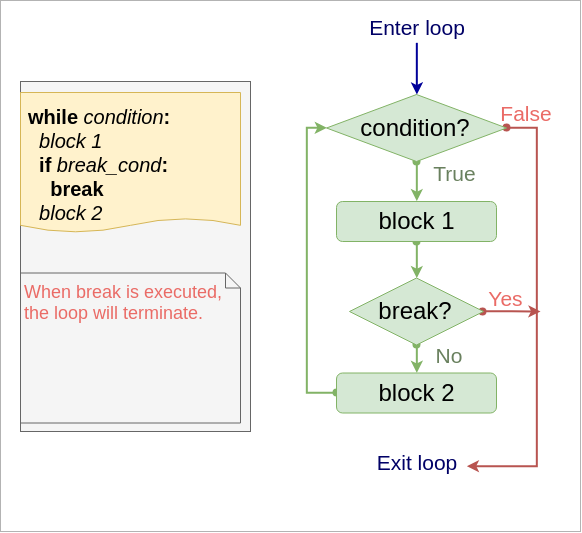

Keyboard shortcuts:
N/СпейсNext Slide
PPrevious Slide
OSlides Overview
ctrl+left clickZoom Element
If you want print version => add '
?print-pdf' at the end of slides URL (remove '#' fragment) and then print.
Like: https://wwwcourses.github.io/...CourseIntro.html?print-pdf
Created for

Iva E. Popova, 2022-2023,

What are loops (cycles)
What are loops (cycles)
- Loops are control statements which allows a block of code to be executed multiple times.
- This repetition of a code can be fixed number of times (for loop) or while some condition is fulfilled (while loop).
- Each execution of the code, during the loop, is called an iteration!
while loop
while loop
Syntax
while condition :
block
- The block will be executed while the condition is True!
- Inside the block we have to change the variable used in condition to prevent an endless loop. Or we can use
breakstatement (discussed further)
Flow

Simple example
i = 1
while i<=5 :
print(i)
i += 1
1
2
3
4
5
This is just a simple example. For fixed numbers of times loops, it is better to user for with range loop, which will be discussed next
Example: endless loop (find the problem)
If you run next code, your Python will run an endless loop. Use CTRL+C or CTRL+Z to stop it
# print the numbers from 10 to 1:
i = 10
while i>=1 :
print(i)
i = 1
Example - proper use case of while
While loop is suitable, when we do not know in advance the number of iterations needed
# ask user to enter a name (string), until it contains at least 3 symbols
# the len function on string returns the number of symbols in a string
user_name = input("Enter a name, please: ")
user_name_length = len(user_name)
while user_name_length < 3:
user_name = input("Enter a name (at least 3 symbols): ")
user_name_length = len(user_name)
print("Thank you, {}!".format(user_name))
Example: sum all numbers in [1..100]
i = 1
sum = 0
while i <= 100:
sum += i
i += 1
print("sum = ", sum)
sum = 5050
Same task is better to be implemented with for loop!
Task: sum even numbers in [1..100]
- Modify the previous example, but calculate the sum only of the even numbers in the given interval [1..100]
sum = 2550
for loop
for loop
Syntax
for item in sequence :
#do something with item
- Python
forstatement is different than the "C-based"forloops in other popular languages (C#, Java, PHP, JavaScript) - In Python,
forstatement iterates over the items of any sequence. - This is common to
foreachloop concept in above-mentioned languages
Flow

Simple example 1
Iterate over symbols in string:
for s in "ada":
print(s.capitalize())
A
D
A
Simple example 2
Iterate over list of numbers:
for num in [1,2,3,4]:
print(num)
1
2
3
4
Nested for loops
for i in [1,2,3]:
for j in "abv":
print(j)
print("\n") #prints new line
- More examples and real-world usage of the
forstatement will be shown in Sequence data types theme!
break statement
break statement
Syntax in while loop
while condition:
block 1
if break_cond:
break # loop is terminated, block 2 is skipped
block 2
Syntax in for loop
for item in sequence :
block 1
if break_cond:
break # loop is terminated, block 2 is skipped
block 2
Flow
{kind=link}
Example - Output letters in a string, until 'i' letter is reached
str = "alibaba"
for s in str:
if s == "i": break
print(s)
a
l
do-while emulations
Python did not have do-while loop, as in other languages (reason: The Zen of Python)
General structure of a do-while loop:
do {
loop block
} while (condition);
But it can be easily emulated if needed
while True:
# loop block
if (condition): break
Example - do-while emulation with break
# ask user to enter a name (string), until it contains at least 3 symbols
while True:
user_name = input("Enter a name (at least 3 symbols): ")
user_name_length = len(user_name)
if user_name_length > 3: break
print("Thank you, {}!".format(user_name))
Example - needless code repetition:
# ask user to enter a name (string), until it contains at least 3 symbols
user_name = input("Enter a name, please: ")
user_name_length = len(user_name)
while user_name_length < 3:
user_name = input("Enter a name (at least 3 symbols): ")
user_name_length = len(user_name)
print("Thank you, {}!".format(user_name))
Can you imagine how the code would look like, if the "do" block was more than 1 line long?
Solution with while True:
while True:
user_name = input("Enter a name (at least 3 symbols): ")
user_name_length = len(user_name)
if user_name_length >= 3:
break
print("Thank you, {}!".format(user_name))
switch-case statement emulation
- If you need a kind of "switch-case" functionality, you can do it with multiple
elif - breakblocks
# print program menu:
print("Select an action:")
print("1. Action 1")
print("2. Action 3")
print("3. Action 3")
while True:
user_choice = int(input("Enter a number [0-4]: "))
if user_choice == 1:
print("Actin 1 fired!")
break
elif user_choice == 2:
print("Actin 2 fired!")
break
elif user_choice == 3:
print("Actin 3 fired!")
break
else:
pass
Another way is to use Python dictionaries, which will be discussed further.
Task: check user input
- Implement a program, which will asks the user for a user name with at least 3 symbols in it, starting with letter only.
- Bellow is the desired output
Enter your user name (at least 3 symbols):
*** At least 3 symbols, please! Try again.
Enter your user name (at least 3 symbols): ad
*** At least 3 symbols, please! Try again.
Enter your user name (at least 3 symbols): ada
Nice, your user_name is: ada
continue statement
continue statement

- Returns the control to the beginning of the loop.
- code after continue will be skipped.
- Usually, continue statement is dependent on some condition.
Syntax in while loop
while condition:
block 1
if continue_cond:
continue # go to while condition
block 2
Example - print all numbers in [1..5], but skip 3
for i in [1,2,3,4,5]:
if i == 3:
continue
print(i)
1
2
4
5
Example - print symbols in a string, excluding vowels:
str = "alabala"
for s in str:
if s in ["a", "e", "i", "o", "u", "y"]:
continue
print(s)
l
b
l
Exercises
HW
"Guess the number" - full version
- Write the full version of the "Guess the number" game, implementing the same rules as given in Guess the number game - the beginning, but giving the user the chance to try more than once.
- The user now will have 5 tries to guess.
- If he/she could not manage to guess the number for 5 tries, the game stops, with a message:
"You lost! My number was X" - where X is the machine number
"Guess the number" - solutions
- a solution with while loop
- guess_the_number_while_loop.py
- a solution with for loop
- guess_the_number_for_loop.py